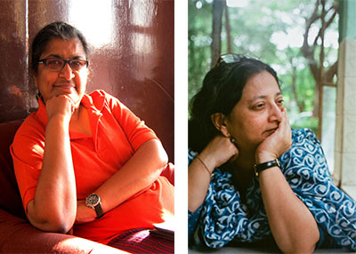
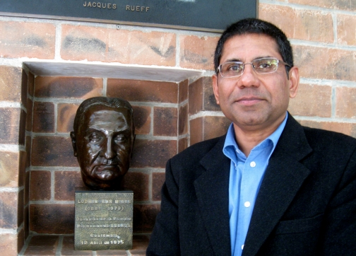
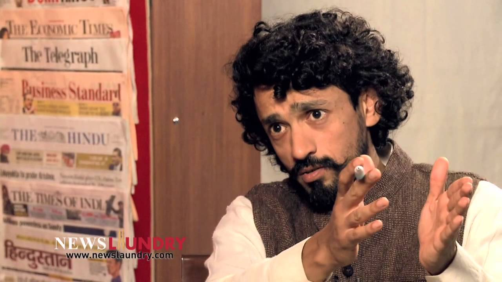
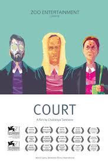

Pre-Note Session
10th August 2015 - Hall: 5:30 PM
By Mr. Narayan Murthy

An IT industrialist and co-founder of Infosys, Narayana Murthy is an alumnus of the National
Institute of Engineering and IIT Kanpur. Among many of his awards, Mr Murthy has been
honoured with the Padma Shri in 2000 and Padma Vibhushan in 2008. He served as the CEO
of Infosys for 21 years from 1981-2000. In 2011, he retired from the company, taking the title
of Chairman Emeritus.
Also known as a great philanthropist, he serves as a member of the advisory boards and
councils of several educational institutions like the UN Foundation, Ford Foundation, the
Indo-British partnership etc.
Keynote Address - A bullet for a bullet
15th August 2015 - Hall: 10:00 AM to 11:00 AM
By Julio Francis Ribeiro

Julio Francis Ribeiro led the Punjab Police during part of the Punjab
insurgency periods. In 1987, he was awarded the Padma Bhushan. He
served as Indian Ambassador to Romania from 1989 until 1993. In August
1991, Ribeiro was attacked and wounded in a Bucharest assassination
attempt by gunmen identified as Punjabi Sikhs.
Through The Looking Glass
15th August 2015 - Hall: 11:00 AM to 12:00 PM
By Rakesh Sharma

Wing Commander Rakesh Sharma,AC,hero of the Soviet Union, is a former IAF test pilot who flew aboard Soyuz T-11 as part of the Intercosmos programme. Sharma was the first Indian to travel to space. A Squadron Leader and pilot with the Indian Air Force, he embarked on a historic mission in 1984 as part of a joint space program between the Indian Space Research Organisation and the Soviet Intercosmos space program, and spent eight days in space aboard the Salyut 7 space station. The Government of India awarded him with the Ashoka Chakra for his outstanding contribution to the Indian space programme.
Love, not Distraction
The 'Hunt' for feminist knowledge in malestream science
Interactive Session- The Untold…
15th August 2015 - Hall: 12:00 PM to 1:00 PM
By Dr.Chayanika Shah, Ms.Gita Chadha

This session seeks to critique science, as it is known in modern nations, societies, cultures and civilizations. It will be conducted by Dr Gita Chadha, a sociologist, and an extensively published specialist in feminist, science and post-colonial studies, and Dr Chayanika Shah, a physicist and queer rights activist who has worked and written extensively on issues of the politics of population control and reproductive technologies, communalism, feminist studies of science, and sexuality and sexual rights.
Panel Discussion - The Welfare Illusion
15th August 2015 - Hall: 2:00 PM to 3:30 PM

Sreenivasan Jain is an award winning journalist working for NDTV since 1995. He is the host of 'Truth vs Hype'--a documentary program based on ground zero reportage—on the NDTV 24x7 news channel. He also hosts 'Power of One' on NTV Profit channel where he interviews major political and business leaders.

Dr. Ilina Sen is an internationally known feminist scholar, human rights activist, a pacifist, an agronomist, a builder and manager of institutions committed to equitable and participatory development, and an author. Dr. Sen is a professor at the Advanced Centre for Women’s Studies, TISS, MUMBAI and a professor of Gender Studies at Mahatma Gandhi Hindi University in Wardha. She manages an innovative NGO, Rupantar, in the central Indian state of Chhattisgarh. Rupantar, set up by Ilina and her husband Dr. Binayak Sen, houses programs including a village clinic in a falciparum malaria endemic area, an agricultural program focused on organic farming and preservation of indigenous biodiversity (e.g., of rice), a program on food security and distribution systems, and several women’s empowerment initiatives including providing resources for victims of domestic violence. She has authored several books including but not limited to, "A Space within the Struggle: Women’s Participation in People’s Struggles," "The Migrant Women of Chhattisgarh," and "The Women’s Movement in India." Together, both Ilina and Binayak have worked for more than three decades among some of India’s most impoverished and socially stigmatized populations (miners, peasants, and India’s indigenous groups) on issues of health, livelihood, and civil liberties.

Reetika Khera is an Indian economist and social scientist. She has a Ph.D from Delhi School of Economics and was a student of noted economist and activist, Jean Dreze. Currently she is an Assistant Professor in the Humanities and Social Sciences department at Indian Institute of Technology, Delhi. She has also been actively involved in working in the implementation of the Government of India's NREGA scheme. She often writes for the Indian Express and Economic and Political Weekly mainly on welfare schemes like the Public Distribution System (PDS) and NREGA.

Parth J. Shah is founder president of the Centre for Civil Society, which aims at advancing social change through public policy. Their work spreads across sectors in fields such as education employment, etc. He procured a Ph. D. in Economics from Auburn University and taught economics at the University of Michigan before returning to India to start CCS. He has published academic articles in the areas of development economics, welfare economics, business-cycle theory, free or laissez-faire banking, and currency-board systems. He has edited Morality of Markets, Friedman on India, Profiles in Courage: Dissent on Indian Socialism, Do Corporations have Social Responsibility?, and co-edited Law, Liberty, and Livelihood, The Terracotta Reader, and Agenda for Change. He writes regularly in newspapers and magazines like Financial Express and Economic Times.
The panel will be moderated by Abhinandan Sekhri

Abhinandan Sekhri is one of the co-founders of Newslaundry which is a news website and video channel. Previously, was the script writer for political satire shows like 'The Great Indian Tamasha' and 'Gustakhi Maaf' on NDTV.
The Dilemmas of Development
15th August 2015 - Hall: 3:30 PM to 5:00 PM
By Dr.Felix Padel

Dr.Felix Padel is a London-based anthropologist, educated at Oxford and the Delhi School of Economics. He has been living in India for over 30 years now and has immersed himself into the lifestyle of the Dongria Konds tribe in Orissa, leading him to campaign for tribal rights and against ecologically harmful projects and schemes. He is also the author of two books based on his experiences.
Post, Like, Share (Discussion in association with the Times Lit Fest)
15th August 2015 - Hall: 5:00 PM to 6:00 PM
By Ms. Karuna Nundy, Ms.Shreya Singhal
This session looks at the varied dimensions of internet freedom. Internet provides a platform for expression and innovation that, as some believe, needs restricted censorship. Explore the many aspects of freedom of speech and expression that seem to have acquired new meaning in the information age of today.
 Karuna Nundy is a Supreme Court Advocate and International Human Rights Lawyer. Ms. Nundy argued for the People's Union of Civil Liberties challenging unconstitutional restrictions on online speech, including Section 66A of the IT Act. She leads a number of important constitutional cases in the Supreme Court including litigation for Bhopal's survivors. She has advised the governments of a number of countries and is a member of Columbia University's project committee for Freedom of Expression. In India, Ms. Nundy drafted contributions to the new anti-rape laws, the Right to Food Act among others. Ms. Nundy holds degrees in economics from St. Stephen's College, and in law from the University of Cambridge and Columbia Law School.
Karuna Nundy is a Supreme Court Advocate and International Human Rights Lawyer. Ms. Nundy argued for the People's Union of Civil Liberties challenging unconstitutional restrictions on online speech, including Section 66A of the IT Act. She leads a number of important constitutional cases in the Supreme Court including litigation for Bhopal's survivors. She has advised the governments of a number of countries and is a member of Columbia University's project committee for Freedom of Expression. In India, Ms. Nundy drafted contributions to the new anti-rape laws, the Right to Food Act among others. Ms. Nundy holds degrees in economics from St. Stephen's College, and in law from the University of Cambridge and Columbia Law School.
 Shreya Singhal was the first to file a petition against Section 66(A) in the Supreme Court (the recently scrapped, controversial law that allowed arrests for offensive content online). She's a second-year student at the Faculty of Law, Delhi University.
Shreya Singhal was the first to file a petition against Section 66(A) in the Supreme Court (the recently scrapped, controversial law that allowed arrests for offensive content online). She's a second-year student at the Faculty of Law, Delhi University.
Catalyst
16th August 2015 - XIMR : 3:00 PM
By Ms. Upasana Makati, Mr.Dhruv Lakra
Malhar seeks to give an opportunity to young entrepreneurs, innovators and changemakers. We wish to provide students and young professionals a platform to interact with an array of inspirational people that they can relate to. These changemakers hail from diverse fields, with significant achievements and stirring stories to match.
 After completing her BMM degree from Jai Hind College, Mumbai and a course from Canada, Upasana Makati took a job at a leading PR firm. But her entrepreneurial drive was not content with just a job. She wanted to set up her own venture. After learning that India is home to the largest population of visually challenged individuals but we do not have any print publications for their leisure, Upasana decided to make that her goal. Three months into her research she decided to quit her job. The result was the birth of White Print - India's first English lifestyle magazine in Braille that covers topics ranging from art, technology, politics, music, short stories and even Bollywood.
After completing her BMM degree from Jai Hind College, Mumbai and a course from Canada, Upasana Makati took a job at a leading PR firm. But her entrepreneurial drive was not content with just a job. She wanted to set up her own venture. After learning that India is home to the largest population of visually challenged individuals but we do not have any print publications for their leisure, Upasana decided to make that her goal. Three months into her research she decided to quit her job. The result was the birth of White Print - India's first English lifestyle magazine in Braille that covers topics ranging from art, technology, politics, music, short stories and even Bollywood.
In her endeavor to establish a Braille magazine, Ms.Upasana also revolutionized marketing, by exposing it to avenues that were previously unknown to it. The advertisements in White Print deviate from the usual visual medium to text. Coca-Cola even designed a musical advertisement with the help of a chip in each magazine. From 20 to 300 copies a month. This is just the beginning for White Print and Upasana Makati.
 The last place you would expect to find an ex-investment banker is in social entrepreneurship. However,
shunning the well-worn path has not only paid off for Dhruv Lakra, but has also generated employment
for one of the most marginalised groups in India, deaf adults. Lakra heads a Rs 25 lakh social enterprise,
Mirakle Couriers.
The last place you would expect to find an ex-investment banker is in social entrepreneurship. However,
shunning the well-worn path has not only paid off for Dhruv Lakra, but has also generated employment
for one of the most marginalised groups in India, deaf adults. Lakra heads a Rs 25 lakh social enterprise,
Mirakle Couriers.
Mirakle has won several awards, including the 2009 Hellen Keller award, Echoing Green Fellowship
Award 2009 and, in 2010, the National Award for the Empowerment of People with Disabilities, given by
the President of India.
Of Trials And Tribulations: Court (film screening session)
17th August 2015 - Scavi: 2:00 PM to 5:00 PM

Court is an Indian courtroom drama film which we shall screen this year.Courtpremiered at 71st Venice International Film Festival, where it won the Best Film in the Horizons category and the Luigi De Laurentiis (Lion Of The Future) award for Chaitanya Tamhane, its director.The film went on to win 18 other awards at film festivals, including honours at the Mumbai, Vienna, Antalya, and Singapore film festivals.Most impressively, in 2015, the film won the Best Feature Film award at the 62nd National Film Awards. The film screening will be followed by a discussion with the director, producer and a cast member of the film.
Discussion with
Chaitanya Tamhane- director
Vivek Gomber- producer, lead actor
Sambhaji Bhagat- folk singer, composer